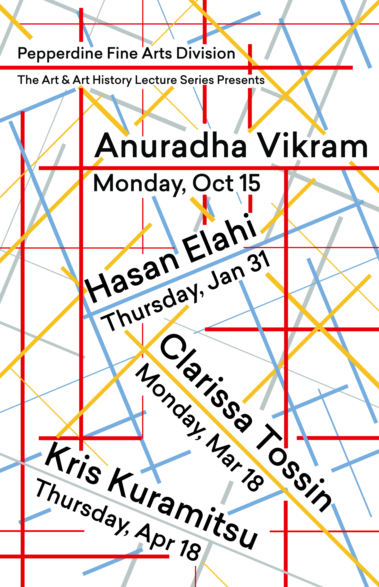
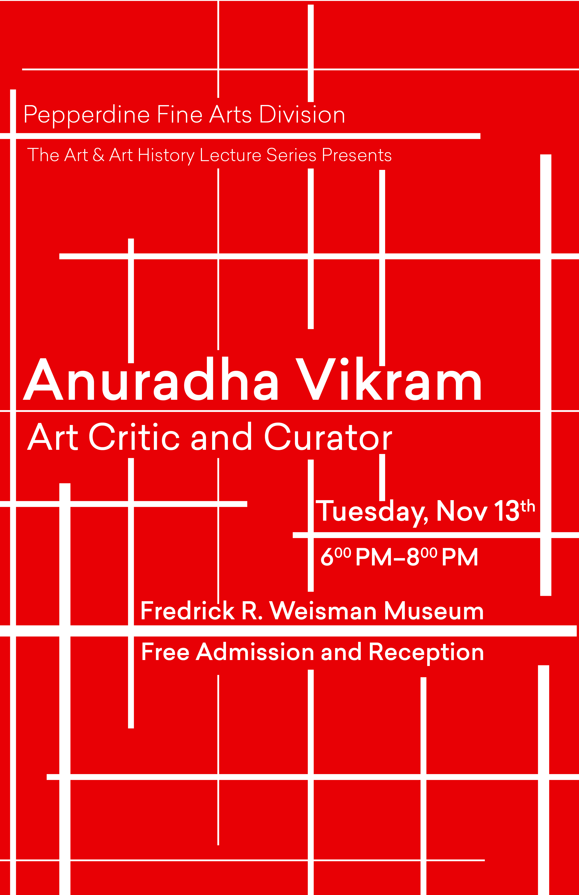
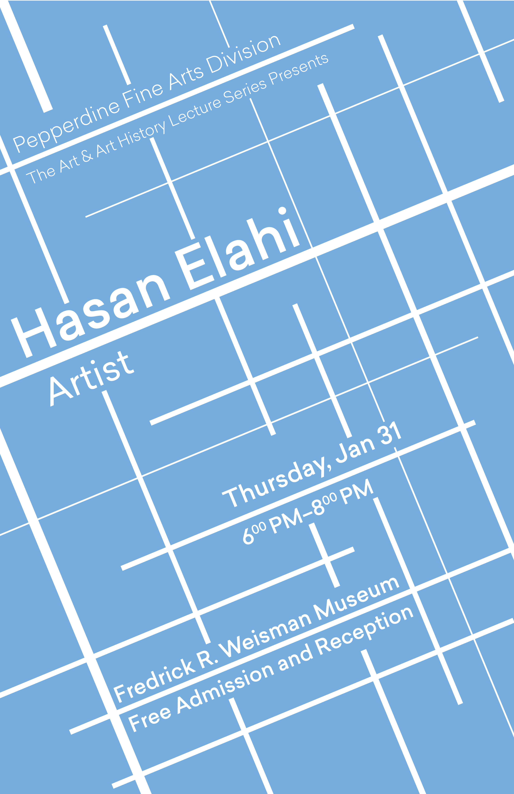
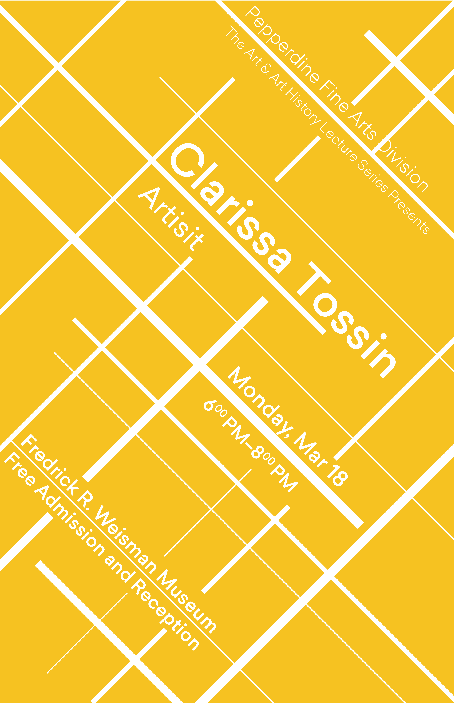
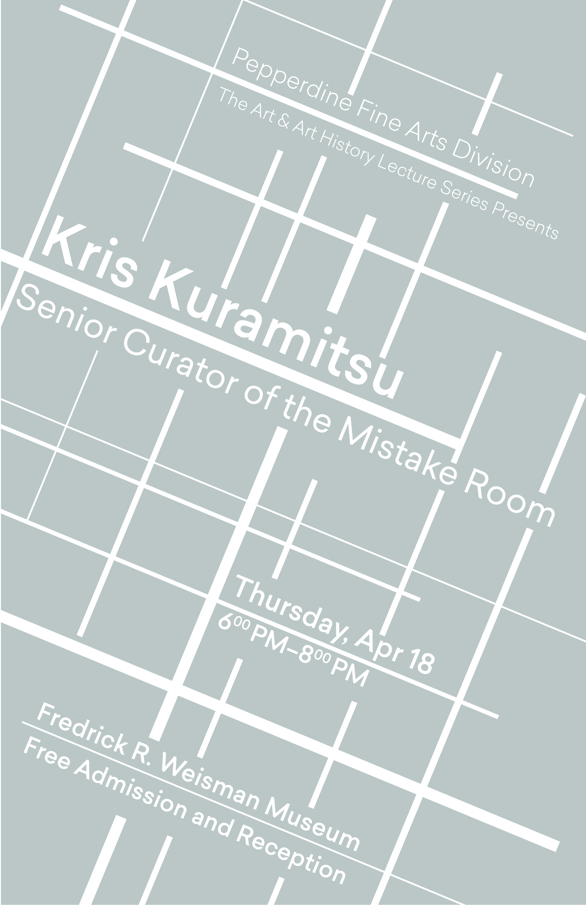

Spring Break 2018, I took a trip up to San Francisco and was oddly fascinated by Sol LeWitt's Wall Drawing 273 at SFMOMA. There were walls with lines at different angles and one wall with the same exact lines in every color overlapping. Later in the year, my client asked for a grid-centric set of posters and I decided to make a non-traditional grid inspired by LeWitt's work. Each artist that came for the series has a different color and angle of lines. The final poster contained each artist, the date they appeared, with all of the lines, colors, and angles that appeared on their individual poster just combined into one.





The inspiration came from Sol LeWitt's Wall Drawing 273, which featured walls with lines at different angles and one wall with the same exact lines in every color overlapping. This conceptual approach to creating patterns through systematic variation became the foundation for the poster series.
Rather than creating a traditional grid system, I developed a non-traditional grid where each artist in the series received their own unique color and angle of lines. As the series progressed, each new poster built upon the previous ones, ultimately culminating in a final poster that combined all the lines, colors, and angles from each individual poster. This created a visual narrative that grew in complexity and richness, much like the artist series itself.